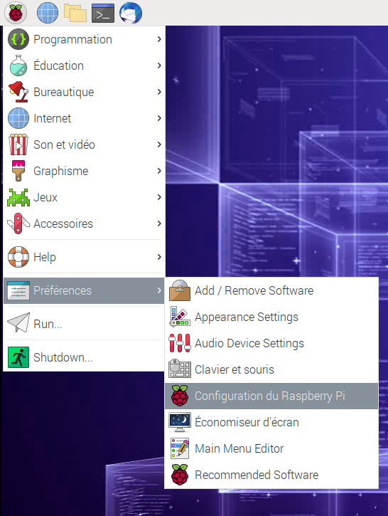

7. FetchBot avec caméra¶
Objectif: Connecter le module caméra Raspberry Pi à ton Raspberry Pi.
Âge |
10 à 18 ans |
Notions abordées |
Carte programmable Raspberry Pi, connexion à une carte programmable, robotique. |
Durée |
4 heures |
Dispositif pédagogiques |
Par groupe de 2 |
Matériel |
1. Un laptop/tablette par groupe de 2, avec connexion à Internet |
Prérequis |
1. Avoir pris en main le Raspberry Pi, et savoir s’y connecter avec VNC viewer (voir Raspberry Pi: Prise en main et préparation) |
7.1. Aperçu¶

7.2. Matériel:¶
Ce dont tu as besoin:
Une carte Raspberry Pi (à gauche dans l’image ci-dessous).
Une caméra Raspberry Pi (à droite dans l’image ci-dessous).
|
|
Carte Raspberry Pi. Le port pour attacher la caméra |
caméra Raspberry Pi |


7.3. Connecter le module caméra¶
Assure-toi que ton Raspberry Pi est éteint.
Trouve le port du module caméra
Tire doucement sur les bords du clip en plastique du port
Insère la nappe caméra ; assure-toi que la nappe est dans le bon sens
Remets le clip en plastique en place

7.4. Configuration dans le Raspberry Pi¶
Démarre ton Raspberry Pi. Va dans le menu principal et ouvre l’outil Configuration du Raspberry Pi.
{kind=link}
Sélectionne l’onglet Interfaces et assure-toi que la caméra est activée :

Redémarre ton Raspberry Pi.
7.5. Vérifie que la caméra fonctionne¶
7.6. Télécommander le rover¶
7.7. Remerciements¶
Cette section reprend des éléments: